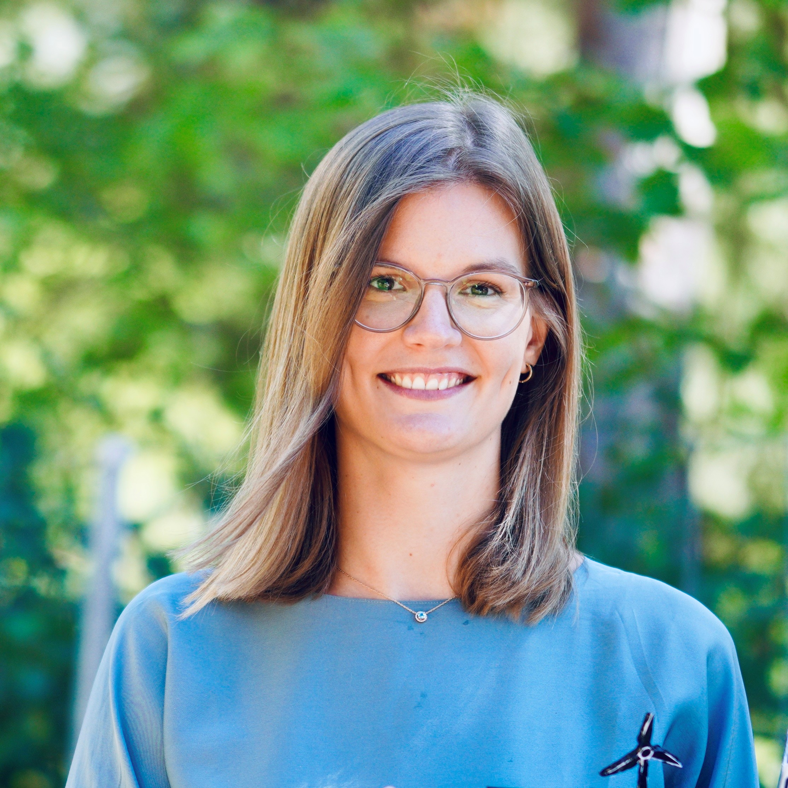

Find info about me and my position at the Technical University of Denmark
 Hi, I am an Assistant Professor at the Technical University of Denmark (DTU) in Lyngby, Copenhagen. My research mainly focuses on the stability analysis, control and time-domain simulation of renewable power systems and the development of new algorithmic tools to keep renewable systems stable under diverse operating scenarios.
I grew up on a small farm in Neuenkirchen, a rather small village just in the middle of Bremen, Hamburg and Hannover in Germany. I received my Bachelor in Electrical Engineering from the University of Applied Sciences in Hannover, before moving to ETH Zürich for my Master of Science in Energy Science. I stayed in Zürich to complete a PhD in Electrical Engineering in the Power Systems Laboratory under supervision of Prof. Gabriela Hug and joined DTU in Nov 2023.
During my PhD studies, I mainly focused on fast-demand response with inverter-interfaced loads. Starting from modeling and developing control mechanisms, I moved on to study the impact of significant numbers of distributed resources on transmission system stability studies. During my PhD, I particularly enjoyed supervising more than 15 student project and exploring various research areas in the field of power system dynamics. Inspired by those studies, I now focus on the intersection of power system dynamics and stability, operation and control of renewable power systems, and the advancement of computing techniques including classic and machine learning algorithms.
Are you interested in working with me? Get in touch! We constantly hire new PhD and postdocs, but also welcome academic guests such as visiting PhD students, external Master Theses projects or research interns.
Supervision
At DTU, I am part of the Power System Section (PWR) in the Department of Wind and Energy Systems . Currently, I co-supervise a group of 6 PhD students including:
- Petros Ellinas
- Bastien Giraud
- Ioannis Karampinis
- Freeman Martin
- Ioannis Papadopoulos
- Bruno Gelfort